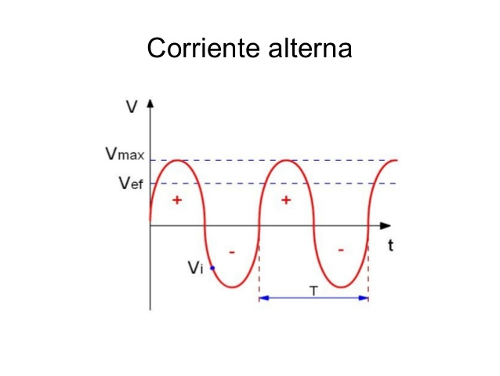
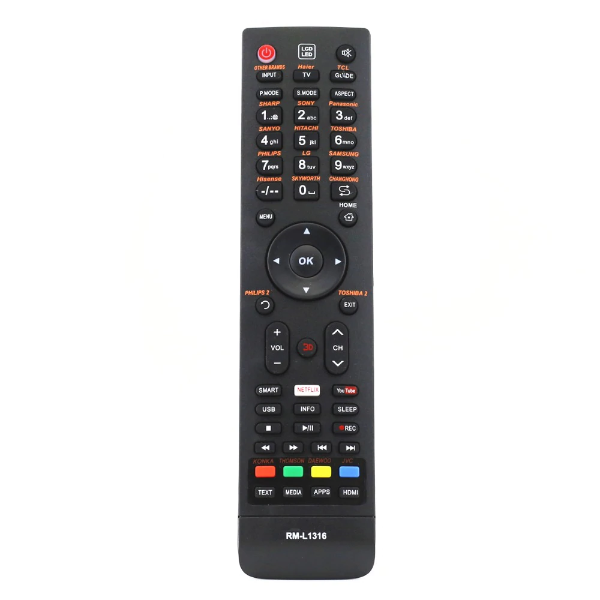
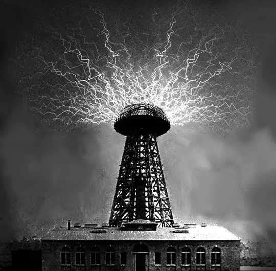
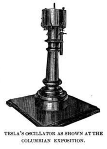

Corriente alterna:
Corriente alterna se denomina a la corriente eléctrica en la que la magnitud y el sentido varían cíclicamente

Bobina de Tesla:
Una bobina de Tesla es un tipo de transformador resonante, llamado así en honor a su inventor, Nikola Tesla, quien la patentó en 1891. La bobina de Tesla está compuesta por una serie de circuitos eléctricos resonantes acoplados.

Control remoto
Un control remoto o mando a distancia es un dispositivo electrónico usado para realizar una operación remota sobre una máquina.

Teleforce
Traducción del inglés-Teleforce es un arma defensiva propuesta por Nikola Tesla que aceleró los gránulos o babosas de material a una alta velocidad dentro de una cámara de vacío mediante repulsión electrostática y luego los disparó desde las boquillas apuntadas a los objetivos previstos.

Telegeodinámica
La telegeodinámica es un concepto de resonancia electromecánica para la exploración sísmica subterránea, propuesto por Nikola Tesla. La idea fue desarrollada alrededor del año 1935.
Rayos de luz violeta
Los rayos de luz violeta se utilizaron a comienzos del siglo XX en un antiguo procedimiento médico obsoleto denominado electroterapia.

Oscilador Tesla
El oscilador electromecánico de Tesla es un generador eléctrico impulsado por vapor patentado por Nikola Tesla en 1893. Años después, Tesla afirmó que una versión del oscilador causó un terremoto en Nueva York en 1898, ganándose el título en la cultura popular de la máquina de terremotos de Tesla.
